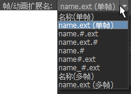

有关文件名语法的信息，请参见渲染图像的子文件夹和名称。
注： 也可以在从 Shell 或命令行渲染时设定渲染文件的文件名（使用
Render 和
-im 选项）。
有关命令行渲染的信息，请参见关于命令行渲染。
设定渲染图像的文件名（语法）
- 在渲染设置窗口的“文件输出”(File Output)区域中，设定以下内容：
- 文件名前缀（例如 rocket）：
| 选项
|
示例
|
|---|
| 名称
|
rocket
|
| 名称.扩展名
|
rocket.iff
|
| 名称.#.扩展名
|
rocket.1.iff
|
| 名称.扩展名.#
|
rocket.iff.1
|
| 名称.#
|
rocket.1
|
| 名称#.扩展名
|
rocket1.iff
|
注意：
- 如果选择不包含 # 的选项，Maya 将渲染单帧。
- 如果选择包含 # 的选项，Maya 将渲染图像序列（动画）。渲染设置窗口的顶部提供输出文件的反馈。
-
“帧/动画扩展名”(Frame/Animation Ext)指向基础名称（名称）的组合和顺序。

- 文件格式扩展名 (Ext)。
- 希望渲染文件包含的帧编号扩展名 (#)。
-
“开始帧”(Start Frame)指向要渲染的第一帧，“结束帧”(End Frame)指向要渲染的最后一帧。
-
“帧数”(By Frame)指向要渲染的帧之间的增量。
-
“帧填充”(Frame Padding)指向希望在帧编号扩展名中包含的位数。
对渲染图像使用自定义文件格式扩展名
- 文件格式扩展名是当前“图像格式”(Image Format)设置的标准文件格式扩展名。若要更改该文件格式扩展名，请在渲染设置窗口的“文件输出”(File Output)区域中，启用“使用自定义扩展名”(Use Custom Extension)并键入要使用的扩展名。